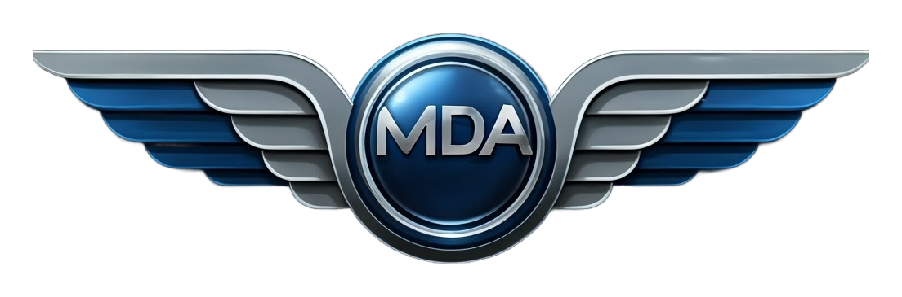
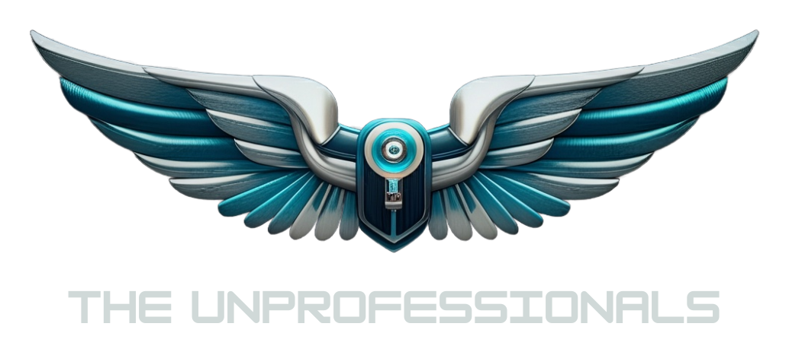

Partner logo rotation
One transparent Browser Source that shows your partner and community logos one at a time: each logo fades and floats in, holds for 30 seconds with a soft light sweep, fades out, then 10 seconds of nothing before the next. It loops forever.
Add it to OBS
- Add a Browser source to your scene. Tick Local file and choose
Voyager_Partner_Logos.htmlfrom your Voyager folder (or use the address shown in Voyager Control if you serve the folder). - Width 1920, height 1080. The logos sit in the bottom-right corner; the rest of the page is transparent.
- Leave the source visible. It needs no connection to Streamer.bot or Voyager; it just plays.
Options (add to the end of the file address, after a ?)
| Option | Meaning | Default |
|---|---|---|
show=30 | Seconds each logo stays on screen | 30 |
gap=10 | Seconds of nothing between logos | 10 |
pos=br | Corner: br, bl, tr, tl or c (centre) | br |
size=380 | Width of the logo box in pixels (on a 1920 × 1080 scene) | 380 |
logos=voyager,mda009,… | Which logos and their order: voyager, mda009, unprofessionals, tobii, cg, thrustmaster | all six |
dark=0 | Use the black Thrustmaster wordmark (for light scenes) instead of the white one | white |
Example: Voyager_Partner_Logos.html?pos=tl&size=300&logos=tobii,cg,thrustmaster
The logos
They live in partner-logos/ as transparent PNGs. To add or replace one, drop a transparent PNG there and add it to the list at the top of the page's script. Backgrounds were removed and each logo trimmed; the Thrustmaster wordmark was supplied on white and is included in white (for dark scenes) and black.


Open a quick preview ↗ (6 seconds on, 2 off; the real source uses 30 and 10).